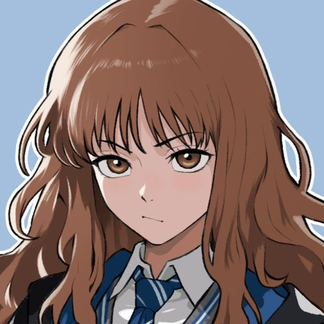

Amortentia is the most powerful love potion ever made, the masterwork of the nineteenth-century potioneer . It shines like mother-of-pearl, its steam rises in spirals, and it smells to each person of whatever draws them most. Its strength did more than anything else to show the wizarding world what love potions really were, and it was outlawed with all the rest in Laverne’s lifetime.
Today it is brewed legally for one purpose only. keeps a licensed sample so that its students will know Amortentia by sight and by smell if they ever meet it, and never teaches them how to make it., “The Prince”
Description
Amortentia is easier to recognize than most potions, which is why it is the one students are shown. It has a distinctive mother-of-pearl sheen, and the steam above it rises in spirals rather than straight up. Those two signs are hard to disguise in a cauldron, though easier in a glass, a scent bottle or a box of sweets.
The scent
No two people smell Amortentia the same way. It smells to each of them of whatever attracts them most: a food, a place, a season, the smell of a particular person. A sixth-year in 1996 might catch freshly mown grass or new parchment, or something they could not name at all. The scent is part of its danger, because it makes the potion inviting to the very person it is meant for. It is also the best warning there is. Anything that smells of everything a person loves is worth not drinking.
Because the scent is drawn from the smeller, it can tell a person something about themselves they have not yet admitted. Some students leave Slughorn’s first lesson with more to think about than potion-making.
Effects
Amortentia does what every love potion does, only faster, harder and for longer. Its drinker is consumed by an obsession with the giver that feels from the inside exactly like love. It is harder to throw off than weaker potions and lasts longer between doses, but it obeys the same limits. It creates no love that was not already there, and it fades unless the drinker is dosed again. The licensed antidote works on it as on the rest.
That strength is why Amortentia, more than any other potion, became the case for the ban. A weak potion could be passed off as a prank. Amortentia could hold a person for as long as someone was willing to keep dosing them.
History
Creation
brewed the first Amortentia in the nineteenth century, the crowning achievement of a lifetime spent refining love potions. For a short while it was sold as a costly luxury. Then it became clear what people were buying it for. Laverne came to regard it as the worst thing she had ever made, spoke before the Wizengamot for the ban on all love potions, and spent her last years helping the Ministry destroy every batch and recipe she could find.
She did not find them all. Amortentia is hard to brew and its ingredients are dear, so it is rarer in the illegal trade than cheaper love potions, but copies of her recipe still circulate among the many unlicensed brewers the Ministry has never managed to stop.
At Hogwarts
Love potions are forbidden at , as they are everywhere. The only one in the castle is a sealed sample of Amortentia, brewed under Ministry licence for the Potions master. It is brought out so that students learn the sheen, the spiralling steam and, above all, the scent that is different for every one of them. Its recipe is not taught, and students never brew it.
Slughorn’s lesson (1996)

Horace Slughorn opened his first lesson of 1996 for the sixth-years with a cauldron of Amortentia, so that they would know it and know why it was outlawed. Hermione Granger named it before he could, and each of them leaned over it to find a different scent.
Hermione would not say aloud what hers meant. Harry Potter recognized two of his and could not place the third: vanilla, and a white flower he could not name. Hermione could, and kept it to herself.
Related magic
- : the class of outlawed potions Amortentia crowns.
- : it shows its viewer what they most desire, much as Amortentia smells of it. The Mirror only shows; Amortentia uses what it finds.
- : Amortentia is the strongest counterfeit of a love that should only be given.
Etymology
The name begins with the Latin amor, “love”. The rest is usually read as an echo of potentia, “power”, or of tentare, “to tempt”: love made powerful, or love as a temptation. Either fits what Laverne made.
Changes from Canon
- Amortentia is outlawed along with all love potions, as a crime against consent.
- Laverne de Montmorency is named as its inventor, and she came to regret it.
- Hogwarts keeps it only as a licensed sample for recognition. Students are never taught to brew it.
- Harry’s scents differ from canon’s.
Appearances
Trivia
- Amortentia is the only love potion most witches and wizards ever smell, and they smell it in a classroom.
- The white flower Harry could not name was narcissus. Vanilla and narcissus were the perfume wore, the same scent he had noticed when they danced at the Yule Ball, described in exactly the same words.
- Hermione’s own scents pointed to Ron Weasley, which she would not admit even to herself.
- Hermione’s silence about Harry’s third scent is part of why, later that year, she put his suspicions of Dracaena down to lovesickness.
Behind the scenes
- The infobox picture is a real-world Amortentia cocktail, photographed by Sweet Tea + Thyme. The books describe the potion’s mother-of-pearl sheen and spiralling steam, which the photo’s smoke and shimmer stand in for.
- In canon Amortentia is not credited to any inventor. Making it Laverne de Montmorency’s masterwork is the Archive’s choice.